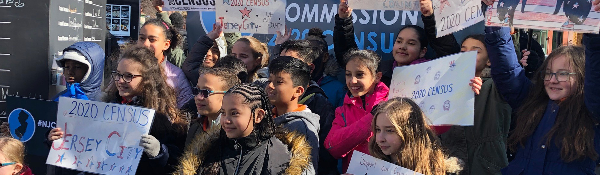

Data Projects
During my time as a Master's student, I have gotten to grow my data and programming skills through various projects.
I am excited to display a few of those projects here.
2022
2021
Leveraging Networks for Artist Recommendations and Friend Insights
Data Mining Project and Networks Project
Consumer analytics within the music industry are increasingly integral to platform success. As our data-driven world evolves, consumers will want more robust analytics. Using bespoke music streaming data, this paper establishes methods of comparing friend’s music streaming behaviors. From the same data, networks representing users’ personal beliefs on artist similarities are created. These networks are then leveraged to produce artist recommendations, based on a user’s friend’s music streaming behavior.
Exploration of Spotify Data
Data Exploration and Networks Project
**Ongoing Project** I am exploring my personal Spotify data including listening history and playlists from a networks and exploratory data analysis perspective. I am incorporating the Spotify API and additional APIs to explore possible relationships with the intent of forming business recommendations
2020
Amazon Purchasing Behavior After the 2016 Election

Networks Project
Analyzing bipartite graph of Amazon book review data to understand how purchasing behavior changes after politically polarizing events.
Paycheck Protection Program Loan and Census Data
Data Exploration Project
Exploring PPP loans by county to identify relationships with census data.